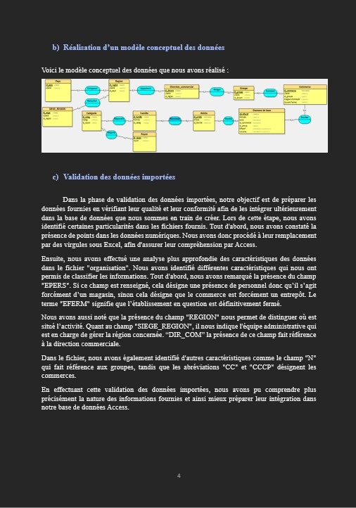

Contexte :
J’ai réalisé une base de données SQL pour une entreprise agroalimentaire fictive en juin 2023, dans le cadre d’un projet universitaire en groupe. L’objectif était de concevoir une base de données exploitable, puis préparer l’intégration de données propres dans ce dernier, afin de gérer les stocks alimentaires et les effectifs en prévision d’une année à l’autre. Nous devions également fournir un cahier des charges concernant la documentation de nos travaux.
1. Conception de la base de données :
J'ai conçu plusieurs tables de données pour stocker des informations sur les stocks alimentaires, les effectifs et les lieux géographiques, entre autres. Ces tables étaient organisées en fonction des thèmes et de la granularité des données.
2. Modélisation des données :
J'ai élaboré un Modèle Conceptuel des Données (MCD) pour définir les entités et leurs relations, puis un Modèle Logique des Données (MLD) pour représenter la structure de stockage des données.
3. Intégration des données : :
J'ai traité deux fichiers Excel contenant de nombreuses lignes de données, en vérifiant leur cohérence, en gérant les informations incomplètes et en formatant les données. Ensuite, j'ai intégré ces données dans votre base de données.
4. Analyse et requêtes SQL :
J'ai réalisé des requêtes SQL et des jointures pour extraire des données et effectuer des prévisions à l'aide d'opérations et de formules mathématiques, répondant ainsi à une problématique spécifique du projet.
5. Gestion de projet :
En tant que chef d'équipe, j'ai maintenu un cahier des charges à jour, décrivant l'organisation du travail, les méthodes utilisées et l'avancement du livrable. J'ai pu également développer des compétences en gestion d'équipe, telles que le travail en équipe, l'organisation du travail et la prise de décisions.
Logiciels utilisés :
Preuve :
Voici un extrait du cahier des charges : (visualisation du MCD et procédure de validation de données importées)
